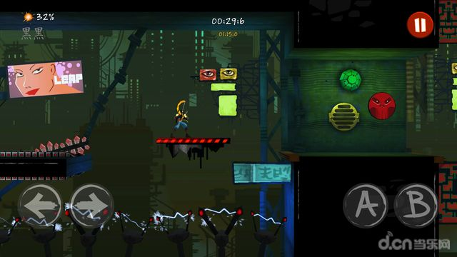
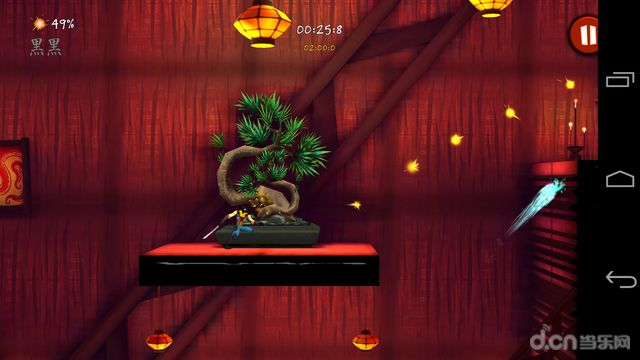
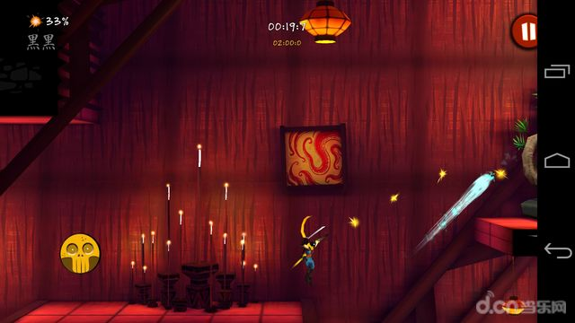

Introduction
Bladers.io is an exhilarating online multiplayer arena game where players control high-speed spinning tops in intense battle royale matches. Drawing inspiration from classic spinning top combat, this browser-based game stands out by combining fast-paced physics-based gameplay with deep customization. Players love it for its accessible yet highly competitive nature, allowing you to jump into a match and immediately experience the thrill of outmaneuvering opponents. Whether you are aiming to knock rivals out of the ring or destroy them through direct, high-impact hits, every match demands quick reflexes and tactical positioning. Available on both desktop and mobile platforms, Bladers.io offers a seamless, action-packed experience that keeps you on the edge of your seat as you strive to become the ultimate spinning top champion.
Getting Started

Starting your journey in Bladers.io is incredibly straightforward. First, launch the game and select your initial spinning top. You can immediately begin customizing your top with different parts to tweak its speed, endurance, and attack power. Once you enter the arena, familiarize yourself with the core controls. Use your Arrow keys or WASD to move your top around the dynamic arena, dodging incoming enemies and positioning yourself for strikes. The Spacebar is your crucial tool for unleashing a special attack, but only when your power meter is fully charged. Your primary objective in each match is to be the last top spinning. You achieve this by physically pushing opponents out of the arena boundaries or depleting their health bar through direct collisions. Spend your first few matches simply practicing your movement and learning how the physics engine handles collisions, as mastering your top's momentum is the fundamental first step to dominating the arena.
Basic Tips
To excel in Bladers.io as a beginner, focus on these essential mechanics. First, always upgrade your top strategically; invest in parts that boost endurance if you struggle with surviving direct hits, or attack power to secure quick knockouts. Second, master strategic movement by never moving in a straight line. Use erratic, circular motions to dodge opponents' attacks while positioning yourself for powerful counterattacks. Third, learn the specific layout of each arena. Use environmental obstacles to your advantage by baiting enemies into crashing into walls, which can temporarily stun them or alter their trajectory. Fourth, manage your power meter carefully. Do not waste your Spacebar special attack when surrounded by multiple enemies; instead, save it for a one-on-one duel or to break free from a corner trap. Finally, practice makes perfect. Spend time in early matches just honing your reaction time, learning how your top's weight affects its spin, and improving your overall decision-making under pressure.
Advanced Strategies

For experienced players, mastering advanced strategies is crucial for climbing the leaderboards. First, utilize the edge-grazing technique. By intentionally spinning near the arena boundaries without falling off, you can build up immense momentum and launch devastating, high-speed ram attacks at the center of the map. Second, master the art of the bait-and-switch. Feign a retreat toward the edge to lure an overconfident opponent, then abruptly change direction using a quick WASD strafe to make them overshoot and fall out themselves. Third, optimize your top's weight distribution for specific matchups. If you face heavy, slow opponents, equip lightweight parts to maximize your evasion and chip away at their stamina. Conversely, against agile tops, equip heavier parts to anchor your position and absorb their hits. Lastly, time your special attacks to coincide with your opponent's recovery frames. Striking exactly as they bounce off a wall or another player guarantees a critical hit, often resulting in an instant ring-out.
Pro Tips

True professionals separate themselves from the pack through micro-adjustments and psychological play. First, exploit the game's physics engine by intentionally colliding with allies in team modes to transfer kinetic energy, creating unpredictable ricochets that confuse enemies. Second, memorize the exact spawn patterns and power-up locations on each map to secure early-game advantages before your opponents even realize what is happening. Third, use audio cues; the pitch of your top's spinning sound changes when it takes damage or loses momentum, allowing you to react to low-health states without looking at the UI. Finally, practice the double-tap release on your Spacebar to cancel the special attack animation mid-frame, giving you a crucial split-second to dodge a counter-attack.
Conclusion
Bladers.io offers a thrilling blend of fast-paced action, deep customization, and intense multiplayer combat. Whether you are a casual player looking for quick browser-based fun or a competitive veteran aiming for the top of the global leaderboards, the game provides endless replayability. Jump into the arena, upgrade your spinning top, master the physics, and prove your skills to become the ultimate champion today.